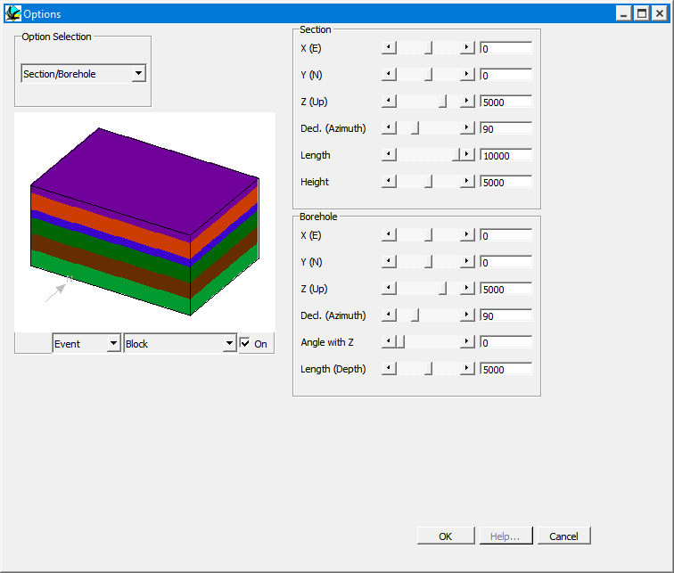

Section / borehole options
These options control the position, scale and orientation of sections and boreholes.

| Section | X | X position of start of section |
| Y | Y position of start of section | |
| Z | Z position of start of section | |
| Declination | Orientation of section from origin of blockSection or Well Log Orientation of section or well log from origin of block , 000 is North, 090 is East | |
| Length | Length of section from X,Y,Z | |
| Borehole | X | X position of top of bore hole |
| Y | Y position of top of bore hole | |
| Z | Z position of top of bore hole | |
| Declination | Orientation of bore hole from origin of blockSection or Well Log Orientation of section or well log from origin of block , 000 is North, 090 is East | |
| Angle with Z-axis | Well Log orientation | |
| Length | Length of well log from X,Y,Z |
Noddy · open source under the MIT licence · Loop3D/noddy_qt